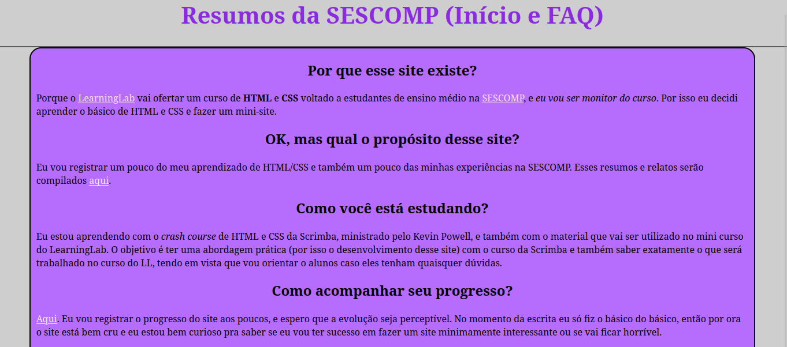
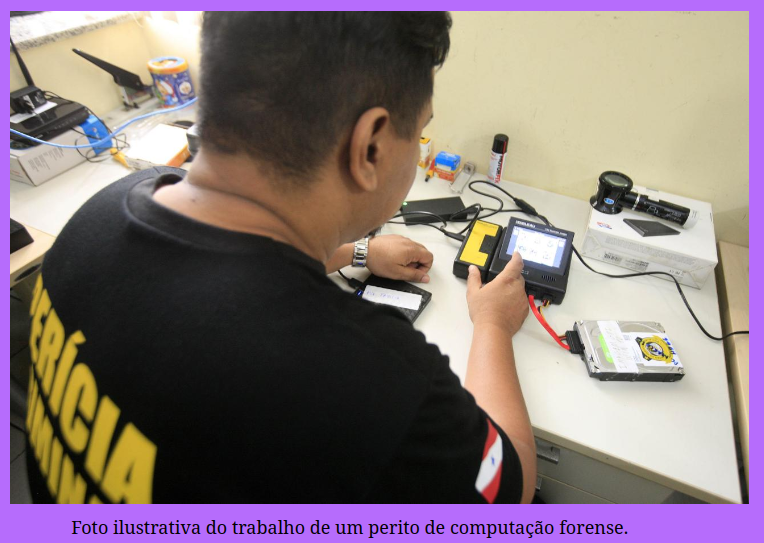
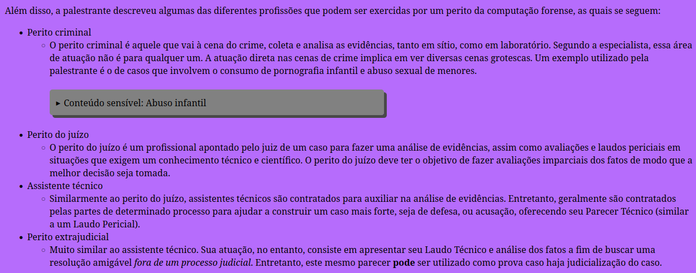

-

Essa é a página inicial do site bem no início do desenvolvimento. Praticamente uma folha de caderno sem nada de interessante. Vamos ver até onde consigo chegar até o final dessa semana.
-

Aprendi algumas manipulações como o margin, e comecei a estilizar a página com um documento CSS separado em vez de usar inline. Também comecei a organizar as coisas por classe de modo a facilitar as mudanças. Ainda não sei se gostei da cor que eu escolhi pra caixa central.
-

Criei algumas caixas para conter os comentários dessa página e adicionei bordas ao layout. Agora vou começar a trabalhar nas páginas dos resumos e relatos, que eu acredito que vai ser a seção mais trabalhosa do site e que talvez fique um pouco mais legal, talvez parecida com o formato de um blog oldschool ou coisa do tipo.
-

Decidi transformar o site em algo mais apresentável. Agora ele também está hospedado no Netlify, então é efetivamente um site de verdade. Falta pouco pra que o site esteja num estado em que seja viável compartilhá-lo, acredito que isso aconteça até amanhã. Eu já sei quais são os próximos passos do desenvolvimento e tenho uma ideia de como fazê-los, então só me falta o tempo para implementar.
-
 
Agora os resumos estão saindo, e eu estou satisfeito com o progresso. Aprendi a fazer uma caixa de aviso de conteúdo sensível (que foi bem simples) e também aprendi a criar snippets de código (que funcionam igual a emmet abbreviations) pra criar meu bloco parágrafo-imagem-legenda.